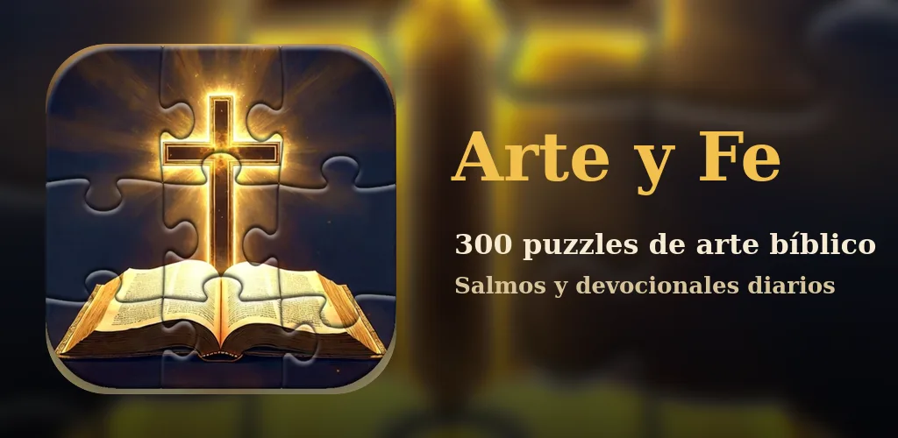
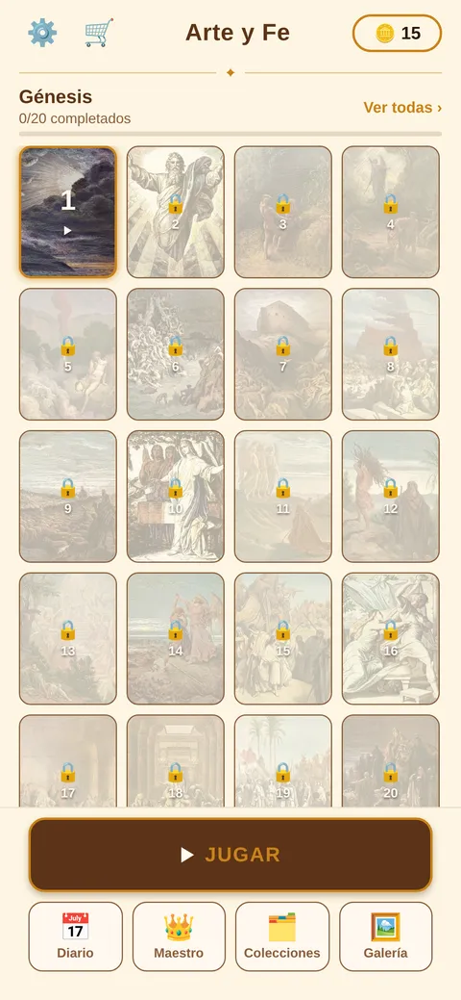
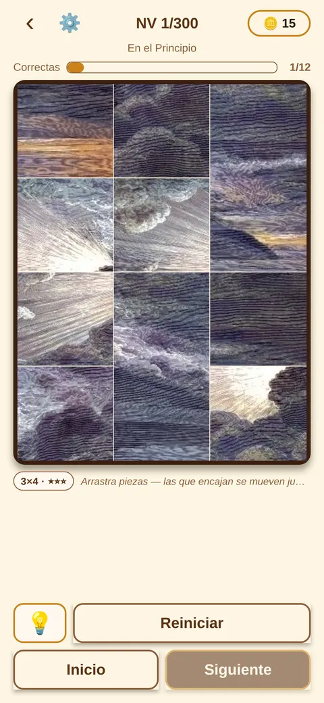
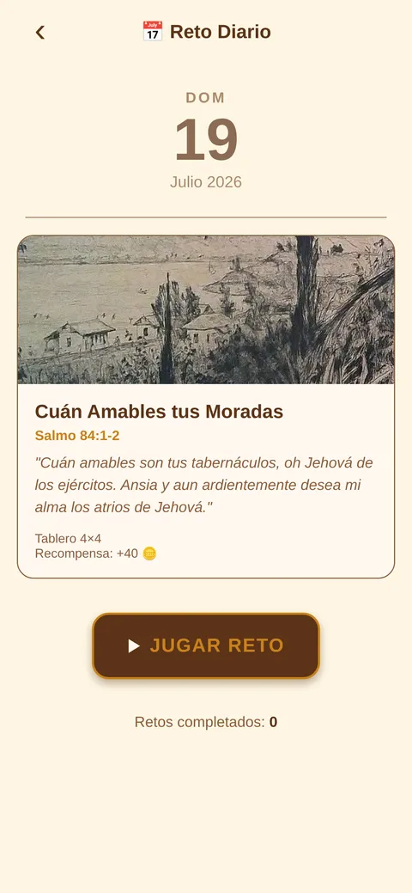
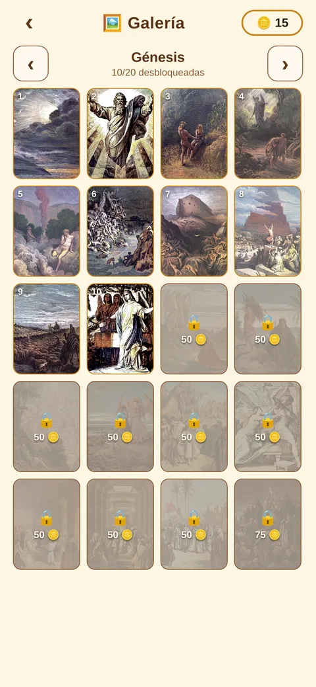
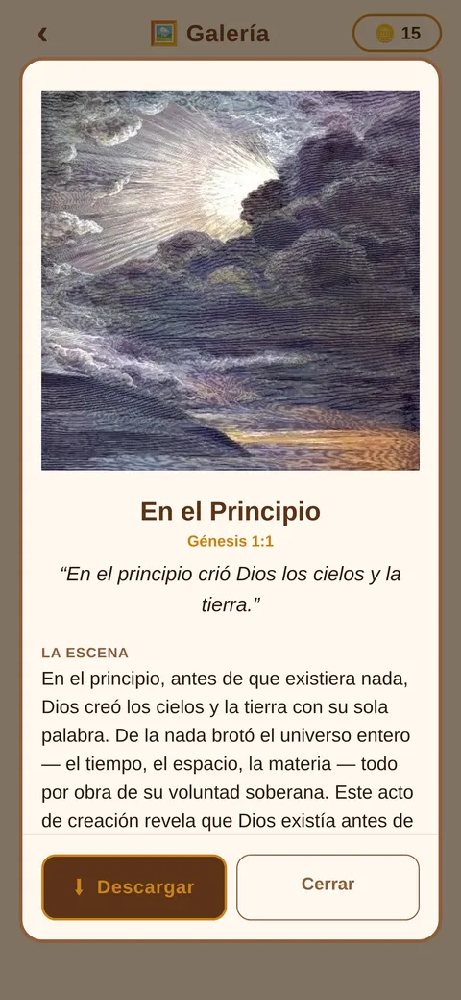

Arte y Fe reúne 300 obras de arte bíblico —grabados de Gustave Doré, láminas de Julius Schnorr von Carolsfeld y otros, todas en dominio público— y las convierte en puzzles. Están organizadas en 15 colecciones que recorren la Biblia de Génesis a Apocalipsis, y al completar cada obra aparece el versículo que la inspiró y la historia de la escena. Art & Faith gathers 300 works of biblical art — engravings by Gustave Doré, plates by Julius Schnorr von Carolsfeld and others, all in the public domain — and turns them into puzzles. They are organised into 15 collections running from Genesis to Revelation, and completing an artwork reveals the verse that inspired it along with the story of the scene. Arte e Fé reúne 300 obras de arte bíblica — gravuras de Gustave Doré, pranchas de Julius Schnorr von Carolsfeld e outras, todas em domínio público — e as transforma em quebra-cabeças. Estão organizadas em 15 coleções que percorrem a Bíblia de Gênesis a Apocalipse, e ao completar cada obra aparece o versículo que a inspirou e a história da cena.
Además de los 300 niveles, la app trae un devocional diario construido sobre 186 salmos, un modo maestro con tableros grandes y una galería donde las obras desbloqueadas se leen con calma y se guardan en el teléfono. Está en español, inglés y portugués, con los versículos en traducciones también en dominio público: Reina-Valera, King James y Almeida. Beyond the 300 levels, the app includes a daily devotional built on 186 psalms, a master mode with larger boards, and a gallery where unlocked artworks can be read at leisure and saved to the phone. It ships in English, Spanish and Portuguese, with verses drawn from translations that are themselves in the public domain: King James, Reina-Valera and Almeida. Além dos 300 níveis, o app traz um devocional diário construído sobre 186 salmos, um modo mestre com tabuleiros maiores e uma galeria onde as obras desbloqueadas podem ser lidas com calma e salvas no telefone. Está em português, espanhol e inglês, com os versículos em traduções também em domínio público: Almeida, King James e Reina-Valera.
No hay cronómetros, ni rachas que romper, ni cuenta atrás. La app no tiene prisa, y esa es la decisión de diseño que la ordena entera. There are no timers, no streaks to break, no countdowns. The app is in no hurry, and that single design decision orders everything else in it. Não há cronômetros, nem sequências para manter, nem contagem regressiva. O app não tem pressa, e é essa decisão de design que organiza todo o resto.
Ficha Fact sheet Ficha técnica
- EstudioStudioEstúdio
- Clajorix Games
- PublicaciónReleaseLançamento
- 9 de agosto de 2026 9 August 2026 9 de agosto de 2026
- PlataformaPlatformPlataforma
- Android · Google Play
- PaquetePackagePacote
com.clajorix.bibliapuzzle- PrecioPricePreço
- Gratis · compras opcionales US$2,99 y US$4,99 Free · optional purchases at US$2.99 and US$4.99 Grátis · compras opcionais de US$2,99 e US$4,99
- IdiomasLanguagesIdiomas
- Español · inglés · portugués English · Spanish · Portuguese Português · espanhol · inglês
- ContenidoContentConteúdo
- 300 niveles · 15 colecciones · 186 salmos 300 levels · 15 collections · 186 psalms 300 níveis · 15 coleções · 186 salmos
- ClasificaciónAudienceClassificação
- Apta para toda la familia Suitable for all ages Adequado para toda a família
- ContactoContactContato
- clajorixgames@gmail.com
Las obras The artworks As obras
Ninguna imagen del juego es generada: todas son reproducciones de obra en dominio público, acreditadas dentro de la app con su autor, su título y su licencia. El grueso viene de dos cuerpos de trabajo del siglo XIX —los grabados de Doré para la Biblia y las láminas de Schnorr von Carolsfeld—, que se eligieron por la misma razón por la que se siguen reimprimiendo: cuentan la escena de un vistazo. None of the images in the game are generated: every one is a reproduction of a public-domain work, credited inside the app with its author, title and licence. Most come from two nineteenth-century bodies of work — Doré's Bible engravings and Schnorr von Carolsfeld's plates — chosen for the same reason they are still reprinted today: they tell the scene at a glance. Nenhuma imagem do jogo é gerada: todas são reproduções de obras em domínio público, creditadas dentro do app com autor, título e licença. A maior parte vem de dois conjuntos do século XIX — as gravuras de Doré para a Bíblia e as pranchas de Schnorr von Carolsfeld —, escolhidos pelo mesmo motivo pelo qual continuam sendo reimpressos: contam a cena num relance.
Arte y Fe es un proyecto devocional independiente, sin afiliación con ninguna iglesia ni denominación. Art & Faith is an independent devotional project, with no affiliation to any church or denomination. Arte e Fé é um projeto devocional independente, sem vínculo com nenhuma igreja ou denominação.
Capturas Screenshots Capturas





Kit de prensa Press kit Kit de imprensa
Un solo archivo con el icono, los gráficos de portada (incluidas versiones en 4K), las quince capturas en los tres idiomas y un documento con los textos listos para citar. A single archive with the icon, the key art (4K versions included), all fifteen screenshots across the three languages, and a document with quotable copy. Um único arquivo com o ícone, as artes de capa (incluindo versões em 4K), as quinze capturas nos três idiomas e um documento com os textos prontos para citar.
- Estos materiales se pueden reproducir libremente en artículos y reseñas.These materials may be reproduced freely in articles and reviews.Estes materiais podem ser reproduzidos livremente em artigos e resenhas.
- Hay códigos de la Edición Completa para reseñar y para sortear entre lectores: basta pedirlos por correo.Full Edition codes are available for reviewing and for reader giveaways — just ask by email.Há códigos da Edição Completa para análise e para sortear entre leitores — basta pedir por e-mail.
ZIP · 18 MB